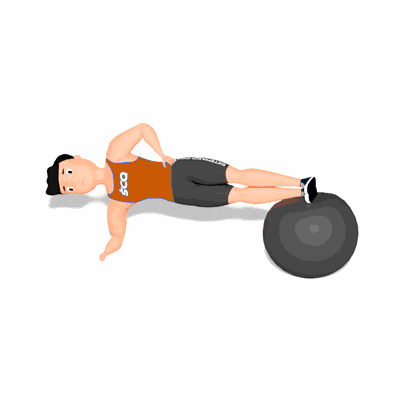

Prancha Lateral com os Pés na Bola Suíça

O exercício irá trabalhar com intensidade a estabilidade da lombar e fortalecimento dos músculos oblíquos. Ele terá maior dificuldade, pois ao colocar os pés elevados na bola a maior parte do peso será deslocado para os cotovelos.
Ficha Técnica
Tipo: Funcional
Grupo Muscular: Abdome
Aparelho: Nenhum
Músculos: Nenhum
Como realizar
- De lado a uma bola suíça, apoie o antebraço direito no solo. O cotovelo do seu braço direito deve estar diretamente abaixo do seu ombro;
- Coloque as pernas estendidas e empilhadas do quadril aos pés sobre a bola suíça, a cabeça e coluna devem estar alinhadas;
- Realize a contração dos músculos abdominais e mantenha a posição;
- Logo após as respirações, inspire e retorne à posição inicial;
- Mude de lado e repita.
 RC STORE
RC STORE